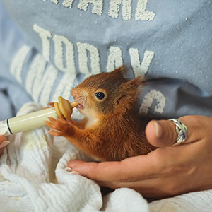
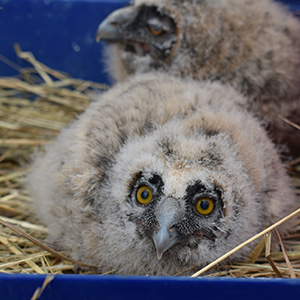

구조활동
야생조수류의 구조 및 응급처치
최근 환경오염과 각종 개발로 야생동물의 서식 및 보존환경이 악화되고, 불법포획, 먹이부족 등으로 인하여 조난사고가 점차 증가하고 있으며, 특히 번식기에는 어린 새들이 어미로부터 떨어져 부상당하거나 탈진한 상태로 발견되는 경우가 부쩍 늘어나고 있습니다.

- 
- 
- 구조신고 작성요령 클릭!
구조신고 작성요령
- 1. 일 시 : 0000 년 00 월 00 일 00 시 경
- 2. 장 소 : 00 면 00 리 00 근처
- 3. 구 조 자 :
- 성 명:
- 주 소:
- 전화번호:
- 4. 구조당시 상태 : 날지 못하고, 눈이 감겨져 있음.
- 5. 구조새명 : 모 름 [협회에서 알려줌]
- 6. 기 타 : 사진을 촬영 할 수 있으시면 하시기 바랍니다.
구조 치료 · 재활센터
천연기념물 및 야생조수류의 구조 및 치료를 위한 긴급구조단 및 신고센터를 운영하여 다친 새들의 구조에 전념을 다하고 있습니다.
| 협회 공식센터 | 파주시지회 | |
|---|---|---|
| 개장일시 | 1980. 1. 25 | 2002. 1. 28 |
| 장소 | 서울시 용산구 후암로 91 | 경기도 파주시 적성면 마지리 (영국군 전적비 옆) |
| 철원군지회 | 밀양시지회 | |
|---|---|---|
| 개장일시 | 2000. 9. 1. | 2000. 9. 1. |
| 장소 | 강원도 철원군 갈말읍 장흥리 (고석정 옆) | 경상남도 밀양시 용평동 203-14 |
| 군산시지회 | 영주시지회 | |
|---|---|---|
| 개장일시 | 2004. 11. 1. | 2004. 5. 11. |
| 장소 | 전라북도 군산시 나포면 서포리 604-1 | 경상북도 영주시 아지동 234-5 |